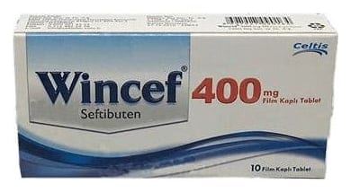

Wincef 400 mg Film Kaplı Tablet, 10 Adet

Ne için kullanılır
KT · Bölüm 1WİNCEF'in etkin maddesi seftibuten, ağızdan alınan, yarı-sentetik, üçüncü kuşak sefalosporin antibiyotiktir. WİNCEF, 10 ve 20 film kaplı tablet PVC-PVDC/Opak alüminyum folyo blister ve karton kutu ambalaj içerisinde sunulmaktadır. WİNCEF (seftibuten) belirli bakteri çeşitlerinin neden olduğu solunum yolu, kulak ve idrar yolu enfeksiyonlarının tedavisinde kullanılır. WİNCEF, doktorunuzun size söyleyeceği şekilde, erişkinlerde ve altı aylıktan daha büyük çocuklarda kullanılabilir.